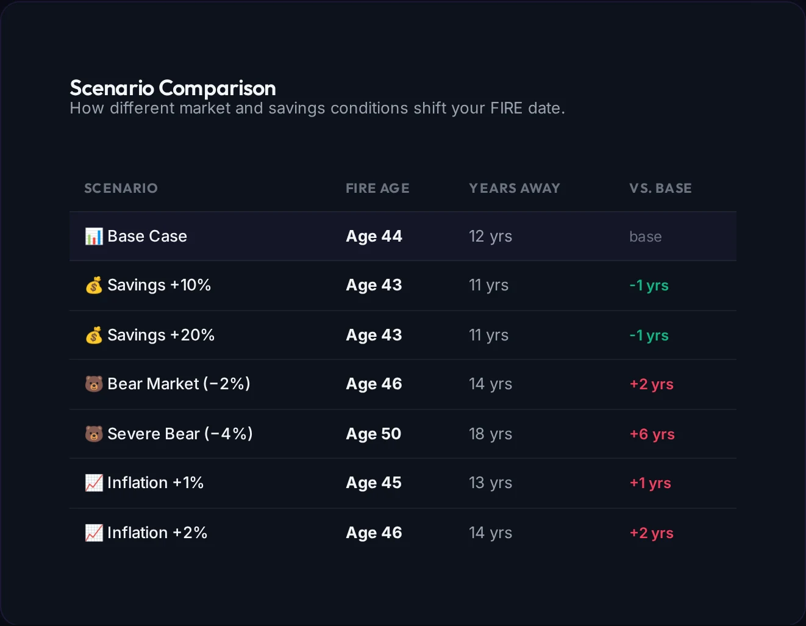
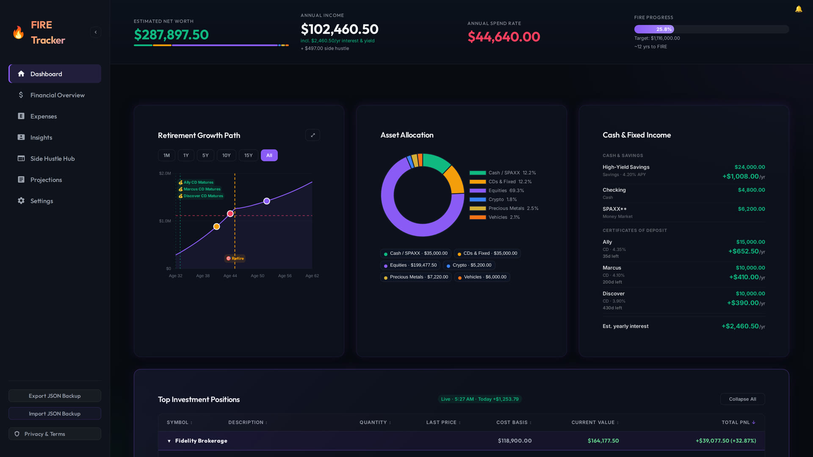
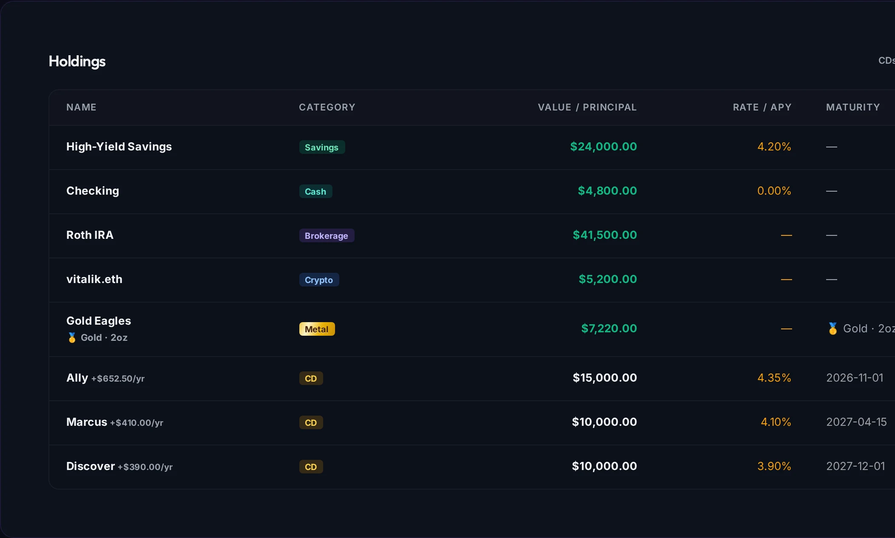
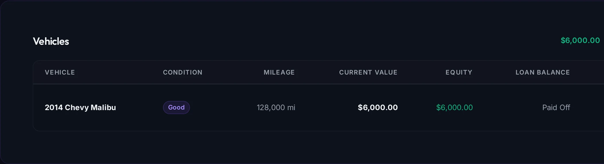
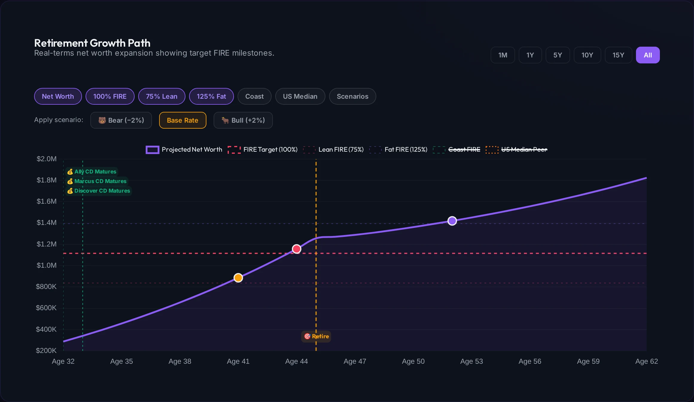
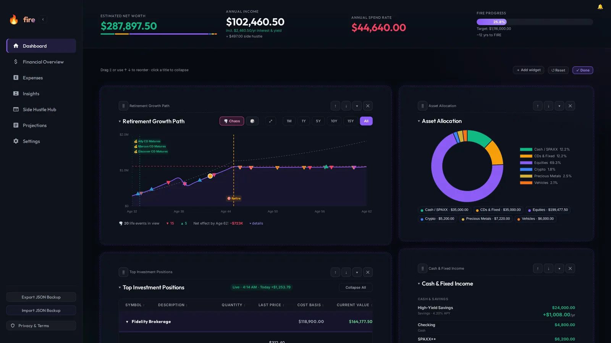
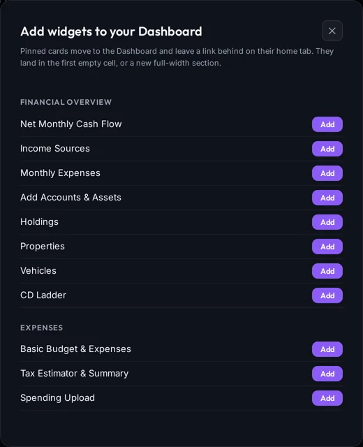
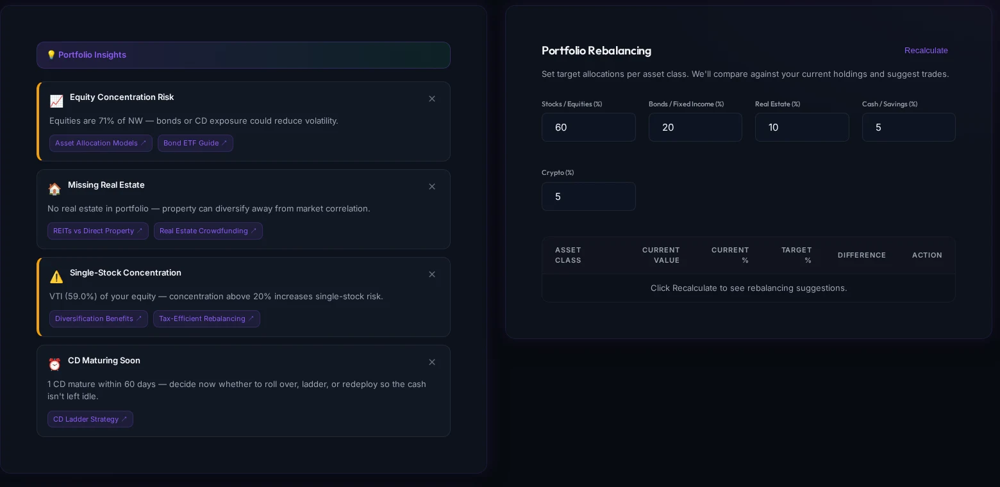
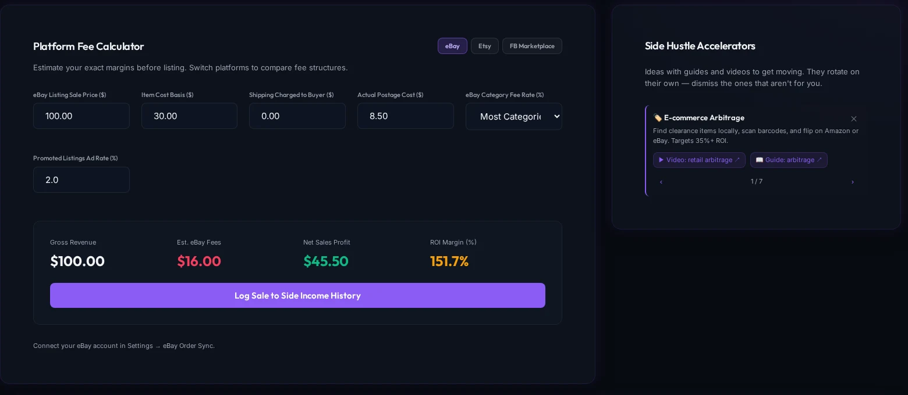

Scenario comparison
See how a raise, a bear market or an inflation spike moves your FIRE age, side by side.
Financial Independence, Retire Early
fire is a self-hosted retirement tracker. Your whole net worth, retirement projections, portfolio insights and side-hustle tracking in one dashboard, plus a 16-tool read-only MCP server so Claude can answer questions about it. Your data stays in one JSON file on your machine.
The demo runs entirely in your browser and saves to localStorage.
The full tour
Narrated deep dives on Projections, Chaos mode, Insights, the Side Hustle Hub, getting your data in, and privacy are rendered from the real app in promo/.
One dashboard
Net worth, income, spend rate and FIRE progress sit at the top of every tab. The dashboard puts your retirement growth path, a drill-down asset allocation and your cash and fixed income side by side, with live prices pushed over SSE.

Everything counts
Savings, brokerage, Roth, CDs with maturity dates, gold and silver by the troy ounce at live spot, ENS names and 0x wallets across eight registered chains, real estate, and the car. Negative equity counts too.


Projections
The projection engine grows your portfolio until retirement, then draws it down cash-first. Try bear and bull scenarios, switch between Conservative, Standard, Aggressive and Early Retiree presets, and see when the money would run out.

New · Chaos mode
Turn on 🌪️ Chaos, next to Bear and Bull, and fire scatters realistic life events across your projection: a gallbladder surgery, a cat's cancer, a new baby, a promotion, a windfall. Green ▲ markers push your net worth up, red ▼ markers pull it down, and a dashed line shows where you'd be if life went to plan.
🛡️ Mitigate the hits. Tick the coverage you have (pet insurance, an HSA, an umbrella policy, a credit freeze…) and Chaos mode shrinks the hits it covers and charges what it costs. Each one shows what it would have saved in your simulated life.
New · Make it yours
Every tab is built from sections, and each section picks its columns: full width, 2, 3 or 4, or wide on the left, right or center. A card alone in a section fills the row. Hit ✎ Customize and the tab becomes a builder canvas: drag a card (mouse or finger), watch the target light up, and drop it into a cell or onto a new section.



See how a raise, a bear market or an inflation spike moves your FIRE age, side by side.

Concentration risk, emergency fund runway, CDs maturing soon, tax-loss harvesting alerts and a target-allocation rebalancer.

eBay, Etsy and Facebook fee calculators, a sales ledger with eBay OAuth sync, and income that stays out of net worth.
Built for Claude
An MCP server ships in the box, and .mcp.json connects it automatically when you open the repo in Claude Code. It exposes 16 tools, all read-only: the smoke test now checks the full registered tool set, while the unit suite also guards against writes.
Add the fire-coach Claude skill and Claude also gets a FIRE playbook (the 4% rule, savings rate, order of operations, taxes, sequence risk, what to do when income stops) and a guide to every tab, so it answers with your numbers and tells you which button to press.
> how close am I to FIRE?
⏺ fire · fire_status_summary (MCP)
{
"fireNumber": 1116000,
"currentNetWorth": 288278,
"progressPercent": 25.8,
"yearsToFire": 13,
"coastFireReached": false
}Everything lives in data/db.json, written atomically. It is read-only toward your real accounts and never initiates a transaction.
Set SYNC_MASTER_KEY for AES-256-GCM encryption of the database, plus optional encrypted Google Drive backups. Drive uses Google OAuth on the self-hosted server; the upload/download/decrypt round-trip remains a rollout gate.
API-key auth is on by default. The app port binds to loopback only, and Caddy serves HTTPS. CSP headers, SRI-pinned scripts and rate limits are applied to every response.
Requires Docker Desktop. Set FIRE_API_KEY in .env (or FIRE_AUTH_DISABLED=true for local-only use), then open http://localhost:3001.
$ git clone https://github.com/nitsuah/fire.git
$ cd fire
$ cp .env.example .env
# edit .env: set FIRE_API_KEY (or FIRE_AUTH_DISABLED=true for local-only use)
$ docker compose up -d